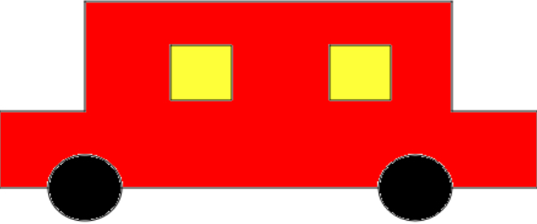

Turtle Academy also known as Logo is an educational programming language, designed in 1967 by Wally Feurzeig, Seymour Papert, and Cynthia Solomon. Logo is not an acronym: the name was coined by Feurzeig while he was at Bolt, Beranek and Newman, and derives from the Greek logos, meaning word or thought. A general-purpose language, Logo is widely known for its use of turtle graphics, in which commands for movement and drawing produced line or vector graphics, either on screen or with a small robot termed a turtle. The language was conceived to teach concepts of programming related to Lisp and only later to enable what Papert called "body-syntonic reasoning", where students could understand, predict, and reason about the turtle's motion by imagining what they would do if they were the turtle. There are substantial differences among the many dialects of Logo, and the situation is confused by the regular appearance of turtle graphics programs that are named Logo. Logo is a multi-paradigm adaptation and dialect of Lisp, a functional programming language. There is no standard Logo, but UCBLogo has the best facilities for handling lists, files, I/O, and recursion in scripts, and can be used to teach all computer science concepts, as UC Berkeley lecturer Brian Harvey did in his Computer Science Logo Style trilogy. Logo is usually an interpreted language, although compiled Logo dialects (such as Lhogho and Liogo) have been developed. Logo is not case-sensitive but retains the case used for formatting purposes.
repeat 36 [repeat 3 [fd 100 rt 120] rt 10]
repeat 36 [repeat 4 [fd 100 rt 90] rt 10]
repeat 36 [repeat 5 [fd 100 rt 72] rt 10]
repeat 36 [repeat 6 [fd 100 rt 60] rt 10]
repeat 36 [repeat 7 [fd 100 rt 52] rt 10]
repeat 36 [repeat 8 [fd 100 rt 45] rt 10]
for [i 10 100 10] [fd :i rt 90]
for [i 20 100 20] [repeat 4 [fd :i lt 90]]
for [i 0 420] [seth :i repeat :i [fd 2 rt 1] pu home pd]
for [l 10 80 5] [repeat 5 [repeat 8 [fd :l rt 45] rt 72]]
for [i -300 300 50] [ penup setxy :i 0 pendown repeat 8 [ penup setcolor random 16 forward 50 pendown arc 360 50 ] ]
for [ i 0 360 45 ] [ seth :i make "n 0 repeat 80 [ setcolor random 15 repeat 8 [ fd :n rt 45 ] make "n :n+1 ] ]
to dashline repeat 5 [setwidth 1 fd 10 setwidth 3 fd 10] end
to circle arc 360 100 end
to triangle repeat 3 [fd 100 rt 120] end
to rectangle repeat 2 [fd 50 rt 90 fd 70 rt 90] end
to square repeat 4 [fd 100 rt 90]
to pentagon repeat 5 [fd 100 rt 72] end
to hexagon repeat 6 [fd 100 rt 60] end
to heptagon repeat 7 [fd 100 rt 52] end
to octagon repeat 8 [fd 100 rt 45] end
to polygon :edges repeat :edges [fd 100 rt 360/:edges] end
to windo :size :color filled :color [repeat 4 [fd :size rt 90]] end
to wheel :radius :color arc 360 :radius setcolor :color fill end
to car cs pu setxy 130 -50 pd rt 90 fd 70 lt 90 fd 70 lt 90 fd 70 rt 90 fd 100 lt 90 fd 300 lt 90 fd 100 rt 90 fd 70 lt 90 fd 70 lt 90 fd 40 pu fd 30 pd wheel 30 "black fd 240 pu fd 30 pd wheel 30 "black pu setxy 30 80 pd windo 50 "yellow setcolor "black pu setx -100 pd windo 50 "yellow setcolor "black ht end
car
The result:
repeat 4 [ repeat 5 [setwidth 1 fd 10 setwidth 3 fd 10] lt 90] rt 90 penup fd 71 lt 90 pendown repeat 8 [ repeat 5 [setwidth 1 fd 10 setwidth 3 fd 10] lt 45 ]
repeat 8 [rt 45 repeat 6 [repeat 90 [fd 2 rt 2] rt 90]]
include 45865 - to save functions.
print "Always-clear-screen-before-writing-any-code"
label "Always-clear-screen-before-writing-any-code"
setwidth 10 setcolor 'red
right 18 forward 50
repeat 5 [
right 144
forward 50
left 72
forward 50]
cs pu ht
make "number_of_dots 200
make "multiplyer 2
make "radius 300
make "looper 0
repeat :number_of_dots [
home
rt 360/:number_of_dots*:looper
fd :radius
make "coords pos
home
rt 360/:number_of_dots*(:looper*:multiplyer)
fd :radius
pd
setxy first :coords last :coords
pu
wait 0
make "looper :looper+1 ]
cs pu ht
make "radius 300
make "dots [ ]
repeat 3 [
fd :radius
queue "dots pos
pd fd 1 bk 1 pu
bk :radius
rt 120 ]
setxy (random 2*:radius) (random 2*:radius)
forever [
make "random_dot pick :dots
setx (((first pos) + (first :random_dot)) / 2)
sety (((last pos) + (last :random_dot)) / 2)
pd fd 1 bk 1 pu
]